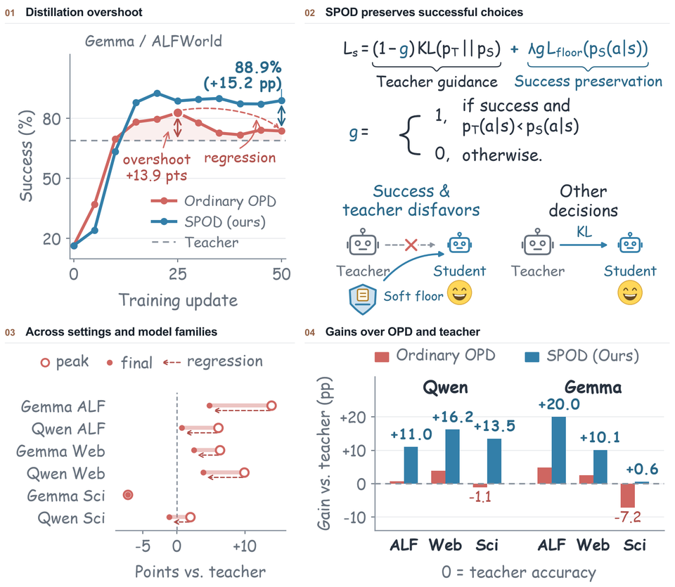

Post-Training | OPD Beyond the Teacher: Understanding and Preserving Distillation Overshoot in Agentic On-Policy Distillation
We identify why student agents surpass their teachers during distillation, then lose those gains. Our success-preserving method, SPOD, improves final success by up to 15.2 percentage points over standard OPD and 20 points over the teacher.